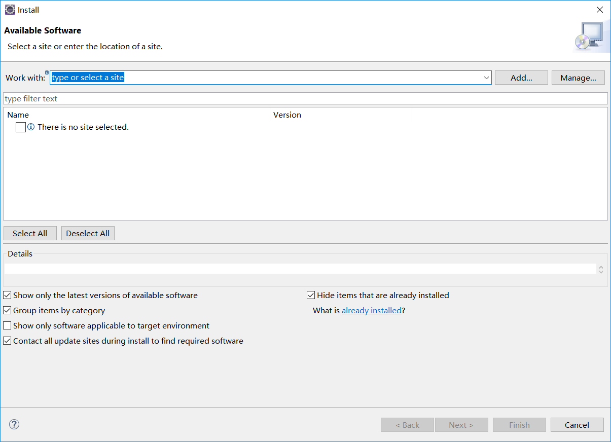
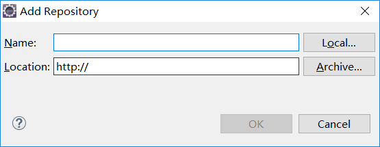
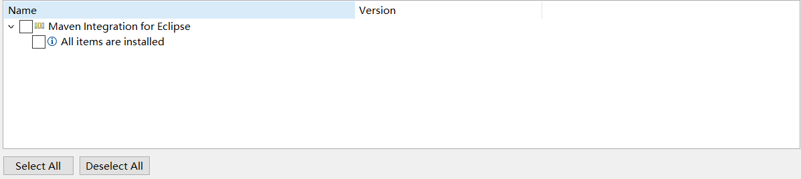
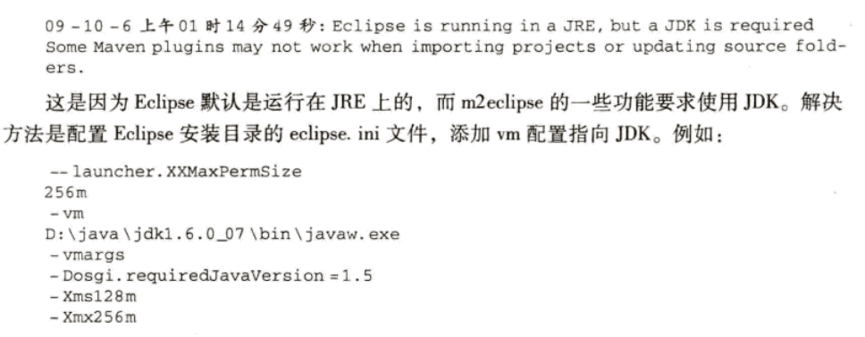

首先要检查jdk的安装，jdk的版本务必高于1.4
接下来下载maven3，地址：http://maven.apache.org/download.html
本地安装：1.由于是免安装版本，所以直接解压缩放到指定的目录下即可。
2.配置环境变量maven_home和修改path添加%maven_home%\bin
path环境变量的作用：当我们在命令行窗口输入命令时，系统会首先在当前目录中寻找可执行文件或者脚本。如果没有找到，系统会遍历环境变量path中定义的路径。
mvn -v
这里面主要包含了maven的脚本，执行命令时就是执行这些脚本。还有一个classworlds的配置文件m2.conf
包含一个类加载器框架，maven使用该框架加载类库。不必关心。
里面包含了至关重要的settings.xml文件。直接在此修改该文件会在该系统上全局的定义maven的行为。更好的方式是将该文件复制到~/.m2/目录下再进行修改。这样只能在用户层面定义 maven。
该目录包含了所有maven运行时需要的java类库。
记录了maven使用的软件许可证Apache License Version 2.0
记录了maven需要的第三方软件
maven简要介绍
由于刚安装maven时没有创建仓库，我们这里需要先执行一下maven的命令。然后在用户目录下可以看到.m2文件。在这个文件中有一个repository文件夹。这里就是 maven存放maven构件的地方。除此之外，我们可以将settings.xml文件复制到.m2目录下，这是最佳实践。
如果无法直接访问互联网且没有内部仓库，maven是不可用的。如果公司限制了代理访问互联网，那么也需要为maven设置http代理。
我使用的是eclipse-oxygen版本，打开eclipse->help->install new software打开如下图所示的窗口。
单击add按钮，会出现下图所示的页面，其中name为m2e，location为http://m2eclipse.sonatype.org/sites/m2e
点击确定之后，eclipse会下载m2eclipse安装站点上的资源信息，如下图所示：
然后一路next就ok了。上图中的maven integration for eclipse是m2eclipse的核心。
m2eclipse还提供了其他的组件，利于工具集成，安装地址为http://m2eclipse.sonatype.org/sites/m2e-extras
下面这张图，不解释
配置用户范围的settings.xml文件，maven目录下的该文件是全局范围的，不宜修改。可以将该文件复制到用户目录的.m2路径下进行修改。这样的影响范围是用户范围。
不要使用ide自带的maven